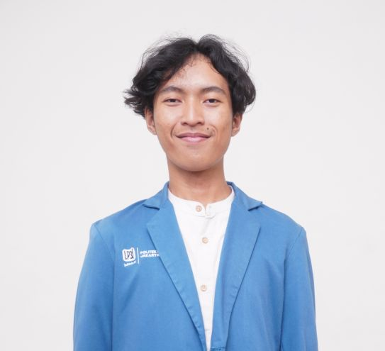
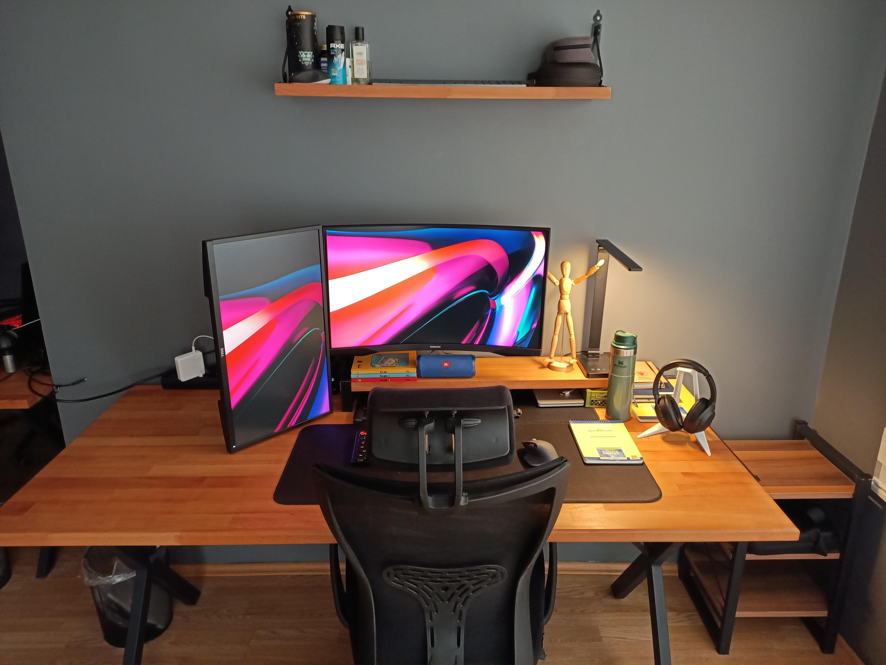

Egi Gibran
Full Stack Software Engineer
Mahasiswa Manajemen Informatika yang fokus pada pengembangan web minimalis, interaksi yang halus, dan arsitektur frontend modern.
Explore MoreEgi Gibran
Mahasiswa Manajemen Informatika yang fokus pada pengembangan web minimalis, interaksi yang halus, dan arsitektur frontend modern.
Explore More
About Me
Gua percaya bahwa teknologi harus terasa intuitif. Fokus saya adalah membangun pengalaman digital yang tidak hanya berfungsi baik, tapi juga memanjakan mata.
Learn More
Featured Work
Koleksi proyek pilihan yang mengedepankan performa tinggi dan estetika modern, mulai dari web organisasi hingga sistem e-commerce.
View Detail
Get In Touch
Terbuka untuk kolaborasi kreatif, proyek freelance, atau sekadar diskusi teknologi. Hubungi saya kapan saja.
Contact Me